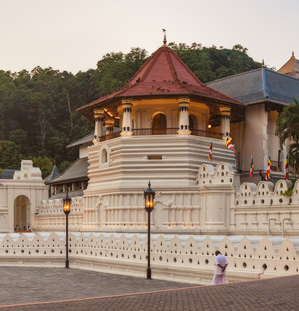
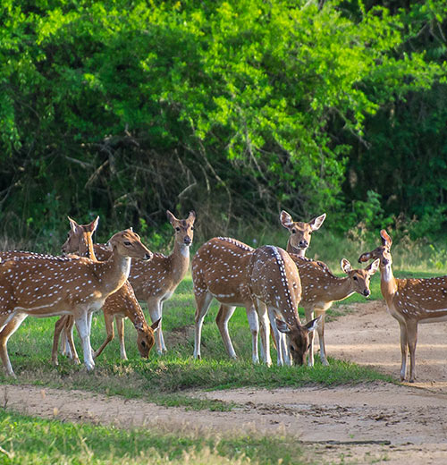
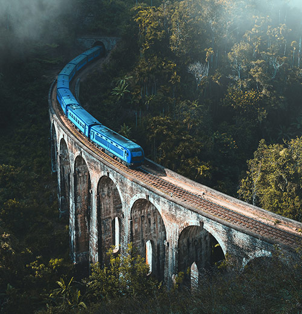

IS TRAVEL TO SRI LANKA SAFE?
Sri Lanka is completely safe to travel to with the resumption of political stability in July 2022.
Recent media coverage about the ground situation is here.
Travel Advisories
Before planning your trip, kindly check your country’s travel advisories for the latest updates.
Stay
informed and ensure a safe and seamless journey
Online Visa
To travel to Sri Lanka, apply for your visa online at eta.gov.lk it is a quick process
Covid Requirements
No current testing requirement
Hotels, Restaurants, Tourist Sites
Facilities are operating normally.
Explore Sri Lanka today!
|
 |
|

|
 |
THINGS
TO DO IN
SRI LANKA
We want to share Sri Lanka's extraordinarily diverse and authentic story with the rest of the world. We want to help you discover the many thousands of different ways in which you can fall in love with our home & plan the perfect trip; local experts, local perspective and all the best tips on where to eat, what to do, who to meet, how to get there and where to make your next favourite memory.
FOLLOW US ON
#travelsrilanka